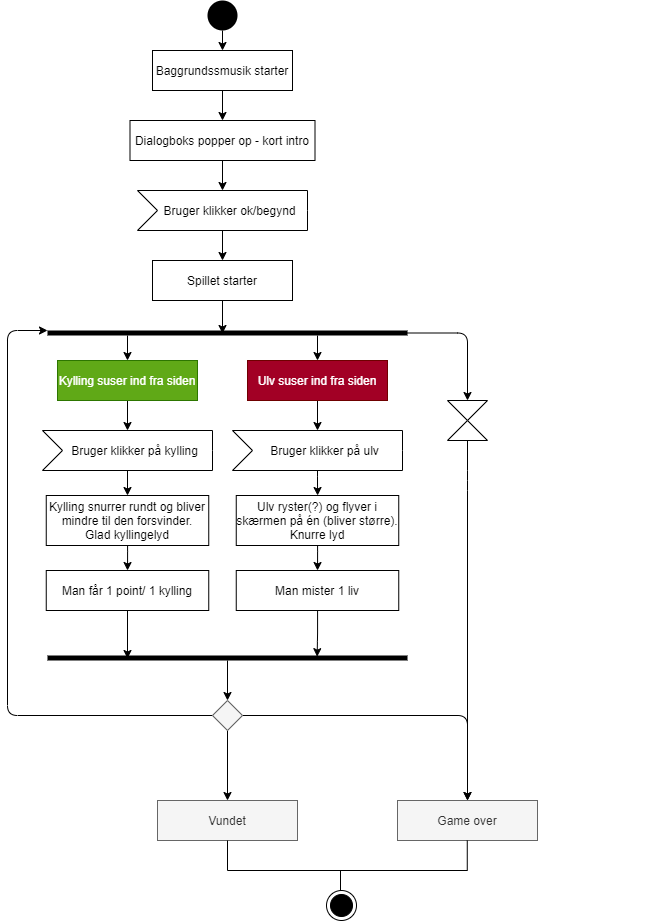
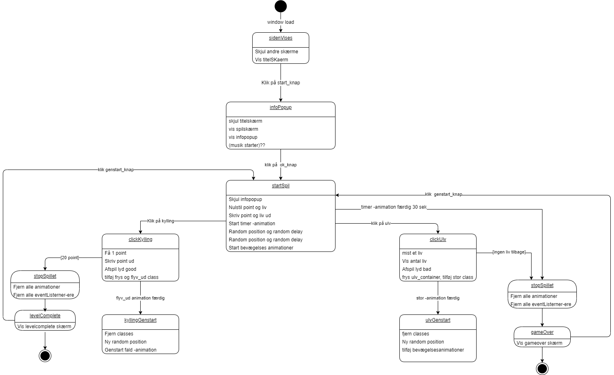

Diagrammer
Spildiagram
State machine diagram
Jeg har efterfølgende som vi har lavet spillet fået indsat en masse nye funktioner og mekanikker som ikke indgår i diagrammet. Da vidste jeg ikke hvordan tingene helt hang sammen endnu.
Jeg har efterfølgende som vi har lavet spillet fået indsat en masse nye funktioner og mekanikker som ikke indgår i diagrammet. Da vidste jeg ikke hvordan tingene helt hang sammen endnu.